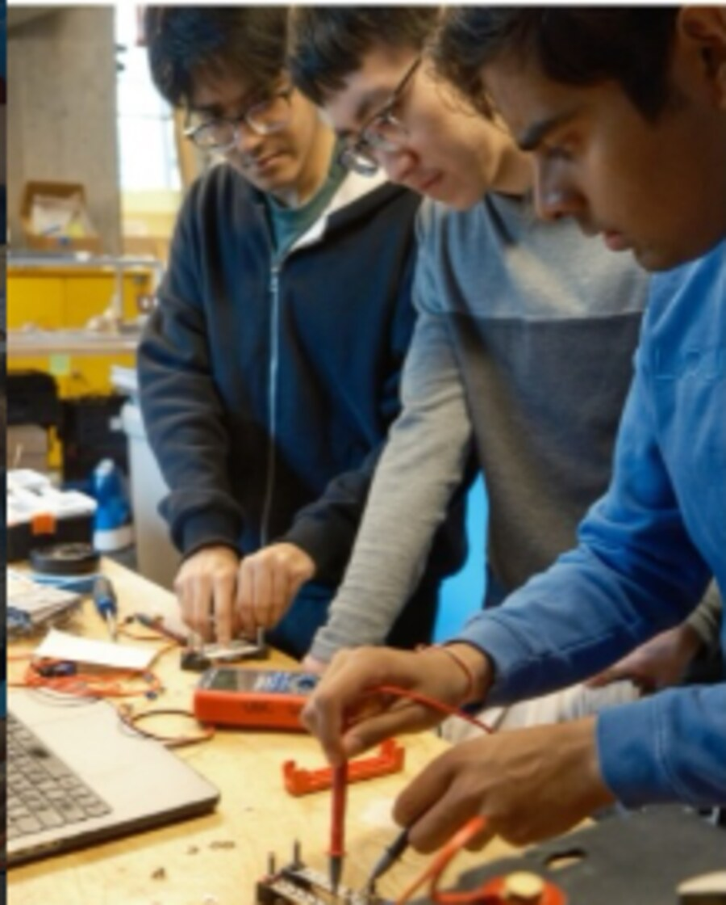

UBC Agrobot — Power System

UBC Agrobots is funded by the university and local BC farmers to make farming more efficient, and the Agrobot is its flagship AI-driven machine. I work on the power distribution sub-team, making sure every component gets the power it needs without anything exploding. That means isolating and combining components in testing, simulating circuits in LTspice, and working across Arduino, ESP32, STM32 and the NVIDIA Jetson Orin.
0. the path were no grass grows
From my high school days, I have always been involved in community development projects that involve tech, whether it be the Robotics Club in my first high school (Maple Leaf), or creating the Robotics Club in my second (Walter Murray Collegiate). This team doesn’t exactly qualify as a club, however being surrounded by individuals driven to create a change, with the help of technology has always been something that has pushed me to become better, hence when the change came calling, I couldn’t possibly hesitate.
1. the team
The Agrobot team is funded by UBC and local BC farmers, essentially researching ways to help them make their farming ways more efficient. There are two primary projects going on, one in Agroponics, where they deal directly with BC farmers to find quick and easy solutions to farming problems. The second one (where I work) is the Agrobot robot, which is their flagship bot that uses AI to support its farming endeavours. There are several different sub-teams such as mechanical, applied AI and electrical. These teams have even smaller sub-teams that cross-pollinate to keep the robot in shape.

2. my fishing line
I work in the power distribution sub-team that ensures proper circuit assembly, as well as making sure all components receive enough power to function without explosion. This is done through testing each and every component in isolation as well as combinations, and creating circuit simulations on LT Spice. The robot uses several different micro-controllers as well, with arduino, esp32 and stm32. A lot of this has introduced me to newer experiences, but luckily, only further strengthened my hobby of tech tinkering! One of the more advanced pieces of electronics I was introduced to was the NVIDIA Jetson Orin, which uses computer vision and AI to navigate and understand the farming landscape.